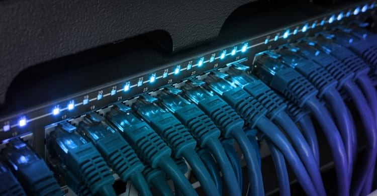
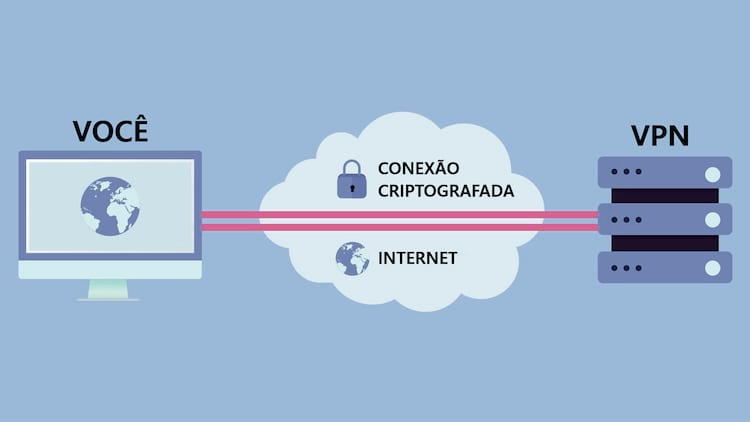
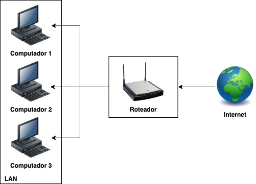
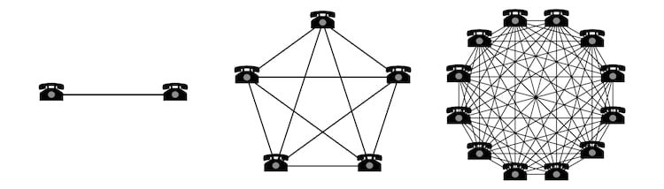

Existem vários tipos diferentes de redes de computadores. As redes de computadores podem ser caracterizadas por seu tamanho e por sua finalidade. O tamanho de uma rede pode ser expresso pela área geográfica que ocupam e pelo número de computadores que fazem parte da rede. As redes podem abranger desde um punhado de dispositivos em uma única sala até milhões de dispositivos espalhados por todo o mundo.
Seis tipos de conexões de rede explicados
São várias os tipos de redes: As redes domésticas, redes comerciais e a Internet são três exemplos comuns. Os dispositivos podem usar vários métodos diferentes para se conectar a essas redes. Existem três tipos básicos de conexões de rede:
Peer-to-peer (P2P)
Permitem que um dispositivo se comunique diretamente com exatamente outro dispositivo. Por exemplo, dois telefones podem emparelhar uns com os outros para trocar informações de contato ou imagens.
Broadcast/multicast
Permitem que um dispositivo envie uma mensagem para a rede e tenha cópias dessa mensagem entregues a vários destinatários.
Multipoint
Permitem que um dispositivo conecte-se diretamente e entregue mensagens para vários dispositivos em paralelo.
Nem todas as tecnologias de rede suportam a criação de todos os tipos de conexões. Cabos Ethernet, por exemplo, suportam broadcast, mas o IPv6 não. As seções abaixo descrevem os diferentes tipos de conexão comumente usados ​​nas redes de hoje.
1. Banda larga

O termo banda larga pode significar várias coisas, mas muitos consumidores o associam ao conceito de serviço de Internet de alta velocidade, instalado em um local específico. Redes privadas em residências, escolas, empresas e outras organizações geralmente se conectam à Internet via banda larga fixa.
História e usos comuns
Várias universidades, governos e instituições privadas criaram peças-chave da Internet durante as décadas de 1970 e 1980. Conexões domésticas com a Internet ganharam rápida popularidade durante a década de 1990, com o surgimento da World Wide Web (WWW). Os serviços de Internet de banda larga fixa tornaram-se firmemente arraigados como padrão para residências em países desenvolvidos durante os anos 2000, com velocidades cada vez maiores. Enquanto isso, os provedores de hotspots Wi-Fi começaram a oferecer suporte a uma rede geograficamente dispersa de um sinal de banda larga fixa nos locais para uso pelos assinantes.
Rede Digital de Serviços Integrados (ISDN)
A tecnologia de Rede Digital de Serviços Integrados (ISDN) oferece suporte a acesso simultâneo a voz e dados por linhas telefônicas, sem a necessidade de uso de um modem. Foi o primeiro exemplo de alta velocidade (em relação às alternativas disponíveis) do serviço de acesso à Internet no mercado consumidor.
DSL (Digital Subscriber Line)
O ISDN não conseguiu obter popularidade generalizada devido à concorrência da linha DSL (Digital Subscriber Line) superior e dos serviços de Internet por cabo.
Banda larga sem fio
Além dessas opções que envolvem cabeamento, existem os serviços de banda larga fixa sem fio (não confundir com banda larga móvel) baseados em transmissores de rádio de microondas. A comunicação torre a torre em redes celulares também se qualifica como uma espécie de sistema fixo de banda larga sem fio.
Problemas da banda larga
Instalações fixas de banda larga são anexadas a um local físico e não são portáteis. Devido ao custo da infraestrutura, a disponibilidade desses serviços de Internet às vezes é limitada a cidades e subúrbios (embora sistemas sem fio fixos funcionem razoavelmente bem em áreas rurais). A concorrência com os serviços de Internet móvel coloca uma pressão crescente sobre os provedores de banda larga fixa, para continuar melhorando suas redes e reduzindo os custos.
2. Internet móvel
O termo "Internet móvel" refere-se a vários tipos de serviços de Internet que podem ser acessados por meio de uma conexão sem fio, em vários locais diferentes
História e usos comuns
Os serviços de Internet via satélite foram criados no final dos anos 90 e 2000, como uma alternativa de alta velocidade para a Internet discada tradicional. Embora esses serviços não possam competir com o alto desempenho das soluções de banda larga fixa mais recentes, eles continuam a atender alguns locais que carecem de outras opções acessíveis. As redes de comunicação celular originais eram muito lentas para suportar o tráfego de dados da Internet, e foram projetadas principalmente para voz, mas com melhorias nas gerações mais novas tornaram-se a principal opção de Internet móvel para muitos.
Redes de dados móveis
As redes de dados móveis usam uma grande variedade de diferentes protocolos de comunicação dentro das famílias de padrões 3G, 4G e 5G.
Problemas das redes móveis
O desempenho das conexões de Internet móvel foi historicamente menor que o oferecido pelos serviços de banda larga fixa, e seu custo também é maior. Mas com as grandes melhorias, tanto no desempenho quanto no custo nos últimos anos, a Internet móvel tornou-se cada vez mais acessível e uma alternativa viável à banda larga fixa.
3. Rede Privada Virtual (VPN)

Uma rede privada virtual (VPN) consiste no hardware, no software e nas conexões necessárias para oferecer suporte a comunicações de redes protegidas pela infraestrutura de rede pública, por meio de um método chamado tunelamento.
História e usos comuns
As VPNs cresceram em popularidade durante a década de 1990, com a proliferação da Internet e redes de alta velocidade. As empresas maiores instalaram VPNs privadas para seus funcionários usarem como uma solução de acesso remoto - conectando-se à intranet corporativa em casa ou ao viajar para acessar e-mails e outros aplicativos comerciais privados. Os serviços de VPN pública que melhoram a privacidade on-line da conexão de um indivíduo com provedores de Internet também continuam a ser amplamente utilizados. Os chamados serviços de "VPN internacional", por exemplo, permitem que os assinantes naveguem na Internet através de servidores em diferentes países, ignorando as restrições de geolocalização que alguns sites implementam.
Tecnologias-chave
O Microsoft Windows adotou o protocolo Point to Point Tunneling Protocol (PPTP) como sua principal solução de VPN. Outros ambientes adotaram os padrões IPsec (Internet Protocol security) e L2TP (Layer 2 Tunneling Protocol).
Problemas
Redes privadas virtuais exigem configuração especial no lado do cliente. As configurações de conexão variam em diferentes tipos de VPN e devem ser configuradas corretamente para que a rede funcione. As tentativas fracassadas de estabelecer uma conexão VPN ou quedas súbitas de conexão são bastante comuns e difíceis de solucionar
4. Redes dial-up
Conexões de rede dial-up permitem comunicações TCP / IP através de linhas telefônicas comuns.
História e usos comuns
A rede dial-up foi a principal forma de acesso à Internet para residências nos anos 90 e início dos anos 2000. Algumas empresas também configuram servidores de acesso remoto privados, permitindo que seus funcionários acessem a intranet da empresa a partir da Internet.
Tecnologias-chave
Dispositivos em redes dial-up usam modems analógicos, que chamam números de telefone designados para fazer conexões e enviar ou receber mensagens. Os protocolos X.25 às vezes são usados para transferir dados de conexões dial-up por longas distâncias, como para processamento de cartões de crédito ou sistemas de caixa eletrônico.
Problemas
O acesso telefônico fornece quantidades muito limitadas de largura de banda de rede. Modems analógicos, por exemplo, alcançam taxas de dados máximas de 56 Kbps. Ele foi substituído pela Internet de banda larga para Internet doméstica e está gradualmente sendo eliminado em outros usos.
5. Rede local (LAN)

lanAs pessoas associam redes de computadores a LANs mais do que qualquer outro tipo de conexão de rede. Uma rede local consiste em uma coleção de dispositivos localizados próximos uns aos outros (como em uma casa ou em um prédio de escritórios), conectados a equipamentos de rede compartilhados (como roteadores de banda larga ou comutadores de rede) que os dispositivos usam para se comunicar uns com os outros, com redes externas.
História e usos comuns
As redes locais (com e sem fio) tornaram-se extremamente populares nos anos 2000, com o crescimento das redes domésticas. Universidades e empresas utilizaram redes com fio ainda antes.
Tecnologias-chave
A maioria das LANs com fio modernas utiliza Ethernet, enquanto as redes locais sem fio geralmente usam Wi-Fi. As redes com fio mais antigas usavam Ethernet, mas também algumas alternativas, incluindo Token Ring e FDDI.
Problemas
O gerenciamento de LANs pode ser difícil, pois são redes projetadas para suportar uma mistura de diferentes dispositivos e configurações de dispositivos (incluindo diferentes sistemas operacionais ou padrões de interface de rede). Como as tecnologias que suportam as LANs funcionam apenas em distâncias limitadas, a comunicação entre as LANs requer um equipamento adicional de roteamento e esforço de gerenciamento.
6. Redes Diretas

Conexões de rede dedicadas entre dois dispositivos (que nenhum outro dispositivo pode compartilhar) também são chamadas de conexões diretas. As redes diretas diferem das redes peer-to-peer, pois as redes peer contêm um maior número de dispositivos, entre os quais muitas conexões peer-to-perr podem ser feitas.
História e usos comuns
Terminais de usuário final comunicados com computadores principais, através de linhas seriais dedicadas. Os PCs com Windows também suportam conexões diretas a cabo, geralmente usadas para transferir arquivos. Em redes sem fio, as pessoas geralmente fazem conexões diretas entre dois telefones (ou um telefone e um dispositivo de sincronização) para trocar fotos e filmes, atualizar aplicativos ou jogar.
Tecnologias-chave
Os cabos da porta serial e da porta paralela suportam conexões básicas com fio direto tradicionalmente, embora tenham diminuído muito no uso em favor de padrões mais recentes, como o USB. Alguns notebooks mais antigos ofereciam portas infravermelhas sem fio para conexões diretas entre modelos que suportavam especificações IrDA. O Bluetooth surgiu como o principal padrão para o emparelhamento sem fio entre smartphones, devido ao seu baixo custo e baixo consumo de energia.
Problemas
Fazer conexões diretas em longas distâncias é difícil. As principais tecnologias sem fio, em particular, exigem que os dispositivos sejam mantidos próximos uns dos outros (Bluetooth) ou em uma linha de visão livre de obstruções (infravermelho).